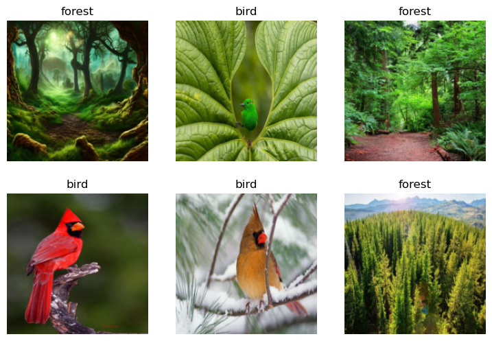

Is it a bird?#
This is an book to show how fastai can be trained and used to classify images.
Train the model#
import socket,warnings
try:
socket.setdefaulttimeout(1)
socket.socket(socket.AF_INET, socket.SOCK_STREAM).connect(('1.1.1.1', 53))
except socket.error as ex: raise Exception("STOP: No internet. Click '>|' in top right and set 'Internet' switch to on")
%pip install -Uqq fastai "duckduckgo_search>=6.2"
Note: you may need to restart the kernel to use updated packages.
from duckduckgo_search import DDGS
from fastcore.all import *
def search_images(keywords, max_images=200): return L(DDGS().images(keywords, max_results=max_images)).itemgot('image')
import time, json
#NB: `search_images` depends on duckduckgo.com, which doesn't always return correct responses.
# If you get a JSON error, just try running it again (it may take a couple of tries).
urls = search_images('bird photos', max_images=1)
urls[0]
'https://images.pexels.com/photos/326900/pexels-photo-326900.jpeg?cs=srgb&dl=wood-flight-bird-326900.jpg&fm=jpg'
from fastdownload import download_url
dest = 'bird.jpg'
download_url(urls[0], dest, show_progress=False)
from fastai.vision.all import *
im = Image.open(dest)
im.to_thumb(256,256)
download_url(search_images('forest photos', max_images=1)[0], 'forest.jpg', show_progress=False)
Image.open('forest.jpg').to_thumb(256,256)
searches = 'forest','bird'
path = Path('bird_or_not')
for o in searches:
dest = (path/o)
dest.mkdir(exist_ok=True, parents=True)
download_images(dest, urls=search_images(f'{o} photo'))
time.sleep(5)
resize_images(path/o, max_size=400, dest=path/o)
---------------------------------------------------------------------------
KeyboardInterrupt Traceback (most recent call last)
Cell In[6], line 9
7 download_images(dest, urls=search_images(f'{o} photo'))
8 time.sleep(5)
----> 9 resize_images(path/o, max_size=400, dest=path/o)
File /opt/homebrew/Caskroom/miniconda/base/envs/blog/lib/python3.10/site-packages/fastai/vision/utils.py:104, in resize_images(path, max_workers, max_size, recurse, dest, n_channels, ext, img_format, resample, resume, **kwargs)
102 files = get_image_files(path, recurse=recurse)
103 files = [o.relative_to(path) for o in files]
--> 104 parallel(resize_image, files, src=path, n_workers=max_workers, max_size=max_size, dest=dest, n_channels=n_channels, ext=ext,
105 img_format=img_format, resample=resample, resume=resume, **kwargs)
File /opt/homebrew/Caskroom/miniconda/base/envs/blog/lib/python3.10/site-packages/fastcore/parallel.py:134, in parallel(f, items, n_workers, total, progress, pause, method, threadpool, timeout, chunksize, *args, **kwargs)
132 if total is None: total = len(items)
133 r = progress_bar(r, total=total, leave=False)
--> 134 return L(r)
File /opt/homebrew/Caskroom/miniconda/base/envs/blog/lib/python3.10/site-packages/fastcore/foundation.py:100, in _L_Meta.__call__(cls, x, *args, **kwargs)
98 def __call__(cls, x=None, *args, **kwargs):
99 if not args and not kwargs and x is not None and isinstance(x,cls): return x
--> 100 return super().__call__(x, *args, **kwargs)
File /opt/homebrew/Caskroom/miniconda/base/envs/blog/lib/python3.10/site-packages/fastcore/foundation.py:108, in L.__init__(self, items, use_list, match, *rest)
106 def __init__(self, items=None, *rest, use_list=False, match=None):
107 if (use_list is not None) or not is_array(items):
--> 108 items = listify(items, *rest, use_list=use_list, match=match)
109 super().__init__(items)
File /opt/homebrew/Caskroom/miniconda/base/envs/blog/lib/python3.10/site-packages/fastcore/basics.py:79, in listify(o, use_list, match, *rest)
77 elif isinstance(o, list): res = o
78 elif isinstance(o, str) or isinstance(o, bytes) or is_array(o): res = [o]
---> 79 elif is_iter(o): res = list(o)
80 else: res = [o]
81 if match is not None:
File /opt/homebrew/Caskroom/miniconda/base/envs/blog/lib/python3.10/concurrent/futures/process.py:575, in _chain_from_iterable_of_lists(iterable)
569 def _chain_from_iterable_of_lists(iterable):
570 """
571 Specialized implementation of itertools.chain.from_iterable.
572 Each item in *iterable* should be a list. This function is
573 careful not to keep references to yielded objects.
574 """
--> 575 for element in iterable:
576 element.reverse()
577 while element:
File /opt/homebrew/Caskroom/miniconda/base/envs/blog/lib/python3.10/concurrent/futures/_base.py:621, in Executor.map.<locals>.result_iterator()
618 while fs:
619 # Careful not to keep a reference to the popped future
620 if timeout is None:
--> 621 yield _result_or_cancel(fs.pop())
622 else:
623 yield _result_or_cancel(fs.pop(), end_time - time.monotonic())
File /opt/homebrew/Caskroom/miniconda/base/envs/blog/lib/python3.10/concurrent/futures/_base.py:319, in _result_or_cancel(***failed resolving arguments***)
317 try:
318 try:
--> 319 return fut.result(timeout)
320 finally:
321 fut.cancel()
File /opt/homebrew/Caskroom/miniconda/base/envs/blog/lib/python3.10/concurrent/futures/_base.py:453, in Future.result(self, timeout)
450 elif self._state == FINISHED:
451 return self.__get_result()
--> 453 self._condition.wait(timeout)
455 if self._state in [CANCELLED, CANCELLED_AND_NOTIFIED]:
456 raise CancelledError()
File /opt/homebrew/Caskroom/miniconda/base/envs/blog/lib/python3.10/threading.py:320, in Condition.wait(self, timeout)
318 try: # restore state no matter what (e.g., KeyboardInterrupt)
319 if timeout is None:
--> 320 waiter.acquire()
321 gotit = True
322 else:
KeyboardInterrupt:
failed = verify_images(get_image_files(path))
failed.map(Path.unlink)
len(failed)
10
dls = DataBlock(
blocks=(ImageBlock, CategoryBlock),
get_items=get_image_files,
splitter=RandomSplitter(valid_pct=0.2, seed=42),
get_y=parent_label,
item_tfms=[Resize(192, method='squish')]
).dataloaders(path, bs=32)
dls.show_batch(max_n=6)

learn = vision_learner(dls, resnet18, metrics=error_rate)
learn.fine_tune(3)
| epoch | train_loss | valid_loss | error_rate | time |
|---|---|---|---|---|
| 0 | 0.269725 | 0.000067 | 0.000000 | 00:03 |
| epoch | train_loss | valid_loss | error_rate | time |
|---|---|---|---|---|
| 0 | 0.006448 | 0.000033 | 0.000000 | 00:03 |
| 1 | 0.002951 | 0.000001 | 0.000000 | 00:03 |
| 2 | 0.002972 | 0.000001 | 0.000000 | 00:03 |
type,_,probs = learn.predict(PILImage.create('bird.jpg'))
print(f"This is a: {type}.")
print(f"Probability it's a {type}: {probs[0]:.4f}")
This is a: bird.
Probability it's a bird: 1.0000
type,_,probs = learn.predict(PILImage.create('forest.jpg'))
print(f"This is a: {type}.")
print(f"Probability it's a forest: {probs[1]:.4f}")
This is a: forest.
Probability it's a forest: 1.0000
Prepare the model for use in an application#
# export the model for use in an application (export.pkl)
learn.export()
# load the model for use in an application
learn_inf = load_learner('export.pkl')
# print the model's vocabulary
learn_inf.dls.vocab
['bird', 'forest']
learn_inf.predict('bird.jpg')
('bird', tensor(0), tensor([1.0000e+00, 3.4342e-10]))
Create an application to use the model#
! pip install -Uqq fastai
from fastai import *
from fastai.vision.widgets import *
btn_upload = widgets.FileUpload()
btn_upload
import io
# create a button to do classification
btn_run = widgets.Button(description='Classify')
btn_run
# display the prediction via labels
lbl_pred = widgets.Label()
lbl_pred.value = f'Prediction: {pred}; Probability: {probs[pred_idx]:.04f}'
lbl_pred
def on_click_classify(change):
uploaded_file = btn_upload.value[0]
img = PILImage.create(io.BytesIO(uploaded_file.content.tobytes()))
out_pl.clear_output()
with out_pl: display(img.to_thumb(128,128))
pred,pred_idx,probs = learn_inf.predict(img)
lbl_pred.value = f'Prediction: {pred}; Probability: {probs[pred_idx]:.04f}'
btn_run.on_click(on_click_classify)
VBox([widgets.Label('Select your image!'),
btn_upload, btn_run, out_pl, lbl_pred])
!pip install voila
!jupyter server extension enable --sys-prefix voila
Collecting voila
Downloading voila-0.5.8-py3-none-any.whl.metadata (9.5 kB)
Requirement already satisfied: jupyter-client<9,>=7.4.4 in /opt/homebrew/Caskroom/miniconda/base/envs/fastai/lib/python3.11/site-packages (from voila) (8.6.3)
Requirement already satisfied: jupyter-core>=4.11.0 in /opt/homebrew/Caskroom/miniconda/base/envs/fastai/lib/python3.11/site-packages (from voila) (5.7.2)
Requirement already satisfied: jupyter-server<3,>=1.18 in /opt/homebrew/Caskroom/miniconda/base/envs/fastai/lib/python3.11/site-packages (from voila) (2.15.0)
Requirement already satisfied: jupyterlab-server<3,>=2.3.0 in /opt/homebrew/Caskroom/miniconda/base/envs/fastai/lib/python3.11/site-packages (from voila) (2.27.3)
Requirement already satisfied: nbclient>=0.4.0 in /opt/homebrew/Caskroom/miniconda/base/envs/fastai/lib/python3.11/site-packages (from voila) (0.10.2)
Requirement already satisfied: nbconvert<8,>=6.4.5 in /opt/homebrew/Caskroom/miniconda/base/envs/fastai/lib/python3.11/site-packages (from voila) (7.16.5)
Requirement already satisfied: traitlets<6,>=5.0.3 in /opt/homebrew/Caskroom/miniconda/base/envs/fastai/lib/python3.11/site-packages (from voila) (5.14.3)
Collecting websockets>=9.0 (from voila)
Downloading websockets-14.1-cp311-cp311-macosx_11_0_arm64.whl.metadata (6.7 kB)
Requirement already satisfied: python-dateutil>=2.8.2 in /opt/homebrew/Caskroom/miniconda/base/envs/fastai/lib/python3.11/site-packages (from jupyter-client<9,>=7.4.4->voila) (2.9.0.post0)
Requirement already satisfied: pyzmq>=23.0 in /opt/homebrew/Caskroom/miniconda/base/envs/fastai/lib/python3.11/site-packages (from jupyter-client<9,>=7.4.4->voila) (26.2.0)
Requirement already satisfied: tornado>=6.2 in /opt/homebrew/Caskroom/miniconda/base/envs/fastai/lib/python3.11/site-packages (from jupyter-client<9,>=7.4.4->voila) (6.4.2)
Requirement already satisfied: platformdirs>=2.5 in /opt/homebrew/Caskroom/miniconda/base/envs/fastai/lib/python3.11/site-packages (from jupyter-core>=4.11.0->voila) (4.3.6)
Requirement already satisfied: anyio>=3.1.0 in /opt/homebrew/Caskroom/miniconda/base/envs/fastai/lib/python3.11/site-packages (from jupyter-server<3,>=1.18->voila) (4.8.0)
Requirement already satisfied: argon2-cffi>=21.1 in /opt/homebrew/Caskroom/miniconda/base/envs/fastai/lib/python3.11/site-packages (from jupyter-server<3,>=1.18->voila) (23.1.0)
Requirement already satisfied: jinja2>=3.0.3 in /opt/homebrew/Caskroom/miniconda/base/envs/fastai/lib/python3.11/site-packages (from jupyter-server<3,>=1.18->voila) (3.1.5)
Requirement already satisfied: jupyter-events>=0.11.0 in /opt/homebrew/Caskroom/miniconda/base/envs/fastai/lib/python3.11/site-packages (from jupyter-server<3,>=1.18->voila) (0.11.0)
Requirement already satisfied: jupyter-server-terminals>=0.4.4 in /opt/homebrew/Caskroom/miniconda/base/envs/fastai/lib/python3.11/site-packages (from jupyter-server<3,>=1.18->voila) (0.5.3)
Requirement already satisfied: nbformat>=5.3.0 in /opt/homebrew/Caskroom/miniconda/base/envs/fastai/lib/python3.11/site-packages (from jupyter-server<3,>=1.18->voila) (5.10.4)
Requirement already satisfied: overrides>=5.0 in /opt/homebrew/Caskroom/miniconda/base/envs/fastai/lib/python3.11/site-packages (from jupyter-server<3,>=1.18->voila) (7.7.0)
Requirement already satisfied: packaging>=22.0 in /opt/homebrew/Caskroom/miniconda/base/envs/fastai/lib/python3.11/site-packages (from jupyter-server<3,>=1.18->voila) (24.2)
Requirement already satisfied: prometheus-client>=0.9 in /opt/homebrew/Caskroom/miniconda/base/envs/fastai/lib/python3.11/site-packages (from jupyter-server<3,>=1.18->voila) (0.21.1)
Requirement already satisfied: send2trash>=1.8.2 in /opt/homebrew/Caskroom/miniconda/base/envs/fastai/lib/python3.11/site-packages (from jupyter-server<3,>=1.18->voila) (1.8.3)
Requirement already satisfied: terminado>=0.8.3 in /opt/homebrew/Caskroom/miniconda/base/envs/fastai/lib/python3.11/site-packages (from jupyter-server<3,>=1.18->voila) (0.18.1)
Requirement already satisfied: websocket-client>=1.7 in /opt/homebrew/Caskroom/miniconda/base/envs/fastai/lib/python3.11/site-packages (from jupyter-server<3,>=1.18->voila) (1.8.0)
Requirement already satisfied: babel>=2.10 in /opt/homebrew/Caskroom/miniconda/base/envs/fastai/lib/python3.11/site-packages (from jupyterlab-server<3,>=2.3.0->voila) (2.16.0)
Requirement already satisfied: json5>=0.9.0 in /opt/homebrew/Caskroom/miniconda/base/envs/fastai/lib/python3.11/site-packages (from jupyterlab-server<3,>=2.3.0->voila) (0.10.0)
Requirement already satisfied: jsonschema>=4.18.0 in /opt/homebrew/Caskroom/miniconda/base/envs/fastai/lib/python3.11/site-packages (from jupyterlab-server<3,>=2.3.0->voila) (4.23.0)
Requirement already satisfied: requests>=2.31 in /opt/homebrew/Caskroom/miniconda/base/envs/fastai/lib/python3.11/site-packages (from jupyterlab-server<3,>=2.3.0->voila) (2.32.3)
Requirement already satisfied: beautifulsoup4 in /opt/homebrew/Caskroom/miniconda/base/envs/fastai/lib/python3.11/site-packages (from nbconvert<8,>=6.4.5->voila) (4.12.3)
Requirement already satisfied: bleach!=5.0.0 in /opt/homebrew/Caskroom/miniconda/base/envs/fastai/lib/python3.11/site-packages (from bleach[css]!=5.0.0->nbconvert<8,>=6.4.5->voila) (6.2.0)
Requirement already satisfied: defusedxml in /opt/homebrew/Caskroom/miniconda/base/envs/fastai/lib/python3.11/site-packages (from nbconvert<8,>=6.4.5->voila) (0.7.1)
Requirement already satisfied: jupyterlab-pygments in /opt/homebrew/Caskroom/miniconda/base/envs/fastai/lib/python3.11/site-packages (from nbconvert<8,>=6.4.5->voila) (0.3.0)
Requirement already satisfied: markupsafe>=2.0 in /opt/homebrew/Caskroom/miniconda/base/envs/fastai/lib/python3.11/site-packages (from nbconvert<8,>=6.4.5->voila) (3.0.2)
Requirement already satisfied: mistune<4,>=2.0.3 in /opt/homebrew/Caskroom/miniconda/base/envs/fastai/lib/python3.11/site-packages (from nbconvert<8,>=6.4.5->voila) (3.1.0)
Requirement already satisfied: pandocfilters>=1.4.1 in /opt/homebrew/Caskroom/miniconda/base/envs/fastai/lib/python3.11/site-packages (from nbconvert<8,>=6.4.5->voila) (1.5.0)
Requirement already satisfied: pygments>=2.4.1 in /opt/homebrew/Caskroom/miniconda/base/envs/fastai/lib/python3.11/site-packages (from nbconvert<8,>=6.4.5->voila) (2.18.0)
Requirement already satisfied: idna>=2.8 in /opt/homebrew/Caskroom/miniconda/base/envs/fastai/lib/python3.11/site-packages (from anyio>=3.1.0->jupyter-server<3,>=1.18->voila) (3.10)
Requirement already satisfied: sniffio>=1.1 in /opt/homebrew/Caskroom/miniconda/base/envs/fastai/lib/python3.11/site-packages (from anyio>=3.1.0->jupyter-server<3,>=1.18->voila) (1.3.1)
Requirement already satisfied: typing_extensions>=4.5 in /opt/homebrew/Caskroom/miniconda/base/envs/fastai/lib/python3.11/site-packages (from anyio>=3.1.0->jupyter-server<3,>=1.18->voila) (4.12.2)
Requirement already satisfied: argon2-cffi-bindings in /opt/homebrew/Caskroom/miniconda/base/envs/fastai/lib/python3.11/site-packages (from argon2-cffi>=21.1->jupyter-server<3,>=1.18->voila) (21.2.0)
Requirement already satisfied: webencodings in /opt/homebrew/Caskroom/miniconda/base/envs/fastai/lib/python3.11/site-packages (from bleach!=5.0.0->bleach[css]!=5.0.0->nbconvert<8,>=6.4.5->voila) (0.5.1)
Requirement already satisfied: tinycss2<1.5,>=1.1.0 in /opt/homebrew/Caskroom/miniconda/base/envs/fastai/lib/python3.11/site-packages (from bleach[css]!=5.0.0->nbconvert<8,>=6.4.5->voila) (1.4.0)
Requirement already satisfied: attrs>=22.2.0 in /opt/homebrew/Caskroom/miniconda/base/envs/fastai/lib/python3.11/site-packages (from jsonschema>=4.18.0->jupyterlab-server<3,>=2.3.0->voila) (24.3.0)
Requirement already satisfied: jsonschema-specifications>=2023.03.6 in /opt/homebrew/Caskroom/miniconda/base/envs/fastai/lib/python3.11/site-packages (from jsonschema>=4.18.0->jupyterlab-server<3,>=2.3.0->voila) (2024.10.1)
Requirement already satisfied: referencing>=0.28.4 in /opt/homebrew/Caskroom/miniconda/base/envs/fastai/lib/python3.11/site-packages (from jsonschema>=4.18.0->jupyterlab-server<3,>=2.3.0->voila) (0.35.1)
Requirement already satisfied: rpds-py>=0.7.1 in /opt/homebrew/Caskroom/miniconda/base/envs/fastai/lib/python3.11/site-packages (from jsonschema>=4.18.0->jupyterlab-server<3,>=2.3.0->voila) (0.10.6)
Requirement already satisfied: python-json-logger>=2.0.4 in /opt/homebrew/Caskroom/miniconda/base/envs/fastai/lib/python3.11/site-packages (from jupyter-events>=0.11.0->jupyter-server<3,>=1.18->voila) (2.0.7)
Requirement already satisfied: pyyaml>=5.3 in /opt/homebrew/Caskroom/miniconda/base/envs/fastai/lib/python3.11/site-packages (from jupyter-events>=0.11.0->jupyter-server<3,>=1.18->voila) (6.0.2)
Requirement already satisfied: rfc3339-validator in /opt/homebrew/Caskroom/miniconda/base/envs/fastai/lib/python3.11/site-packages (from jupyter-events>=0.11.0->jupyter-server<3,>=1.18->voila) (0.1.4)
Requirement already satisfied: rfc3986-validator>=0.1.1 in /opt/homebrew/Caskroom/miniconda/base/envs/fastai/lib/python3.11/site-packages (from jupyter-events>=0.11.0->jupyter-server<3,>=1.18->voila) (0.1.1)
Requirement already satisfied: fastjsonschema>=2.15 in /opt/homebrew/Caskroom/miniconda/base/envs/fastai/lib/python3.11/site-packages (from nbformat>=5.3.0->jupyter-server<3,>=1.18->voila) (2.21.1)
Requirement already satisfied: six>=1.5 in /opt/homebrew/Caskroom/miniconda/base/envs/fastai/lib/python3.11/site-packages (from python-dateutil>=2.8.2->jupyter-client<9,>=7.4.4->voila) (1.17.0)
Requirement already satisfied: charset_normalizer<4,>=2 in /opt/homebrew/Caskroom/miniconda/base/envs/fastai/lib/python3.11/site-packages (from requests>=2.31->jupyterlab-server<3,>=2.3.0->voila) (3.4.1)
Requirement already satisfied: urllib3<3,>=1.21.1 in /opt/homebrew/Caskroom/miniconda/base/envs/fastai/lib/python3.11/site-packages (from requests>=2.31->jupyterlab-server<3,>=2.3.0->voila) (2.3.0)
Requirement already satisfied: certifi>=2017.4.17 in /opt/homebrew/Caskroom/miniconda/base/envs/fastai/lib/python3.11/site-packages (from requests>=2.31->jupyterlab-server<3,>=2.3.0->voila) (2024.12.14)
Requirement already satisfied: ptyprocess in /opt/homebrew/Caskroom/miniconda/base/envs/fastai/lib/python3.11/site-packages (from terminado>=0.8.3->jupyter-server<3,>=1.18->voila) (0.7.0)
Requirement already satisfied: soupsieve>1.2 in /opt/homebrew/Caskroom/miniconda/base/envs/fastai/lib/python3.11/site-packages (from beautifulsoup4->nbconvert<8,>=6.4.5->voila) (2.5)
Requirement already satisfied: fqdn in /opt/homebrew/Caskroom/miniconda/base/envs/fastai/lib/python3.11/site-packages (from jsonschema[format-nongpl]>=4.18.0->jupyter-events>=0.11.0->jupyter-server<3,>=1.18->voila) (1.5.1)
Requirement already satisfied: isoduration in /opt/homebrew/Caskroom/miniconda/base/envs/fastai/lib/python3.11/site-packages (from jsonschema[format-nongpl]>=4.18.0->jupyter-events>=0.11.0->jupyter-server<3,>=1.18->voila) (20.11.0)
Requirement already satisfied: jsonpointer>1.13 in /opt/homebrew/Caskroom/miniconda/base/envs/fastai/lib/python3.11/site-packages (from jsonschema[format-nongpl]>=4.18.0->jupyter-events>=0.11.0->jupyter-server<3,>=1.18->voila) (2.0)
Requirement already satisfied: uri-template in /opt/homebrew/Caskroom/miniconda/base/envs/fastai/lib/python3.11/site-packages (from jsonschema[format-nongpl]>=4.18.0->jupyter-events>=0.11.0->jupyter-server<3,>=1.18->voila) (1.3.0)
Requirement already satisfied: webcolors>=24.6.0 in /opt/homebrew/Caskroom/miniconda/base/envs/fastai/lib/python3.11/site-packages (from jsonschema[format-nongpl]>=4.18.0->jupyter-events>=0.11.0->jupyter-server<3,>=1.18->voila) (24.11.1)
Requirement already satisfied: cffi>=1.0.1 in /opt/homebrew/Caskroom/miniconda/base/envs/fastai/lib/python3.11/site-packages (from argon2-cffi-bindings->argon2-cffi>=21.1->jupyter-server<3,>=1.18->voila) (1.17.1)
Requirement already satisfied: pycparser in /opt/homebrew/Caskroom/miniconda/base/envs/fastai/lib/python3.11/site-packages (from cffi>=1.0.1->argon2-cffi-bindings->argon2-cffi>=21.1->jupyter-server<3,>=1.18->voila) (2.22)
Requirement already satisfied: arrow>=0.15.0 in /opt/homebrew/Caskroom/miniconda/base/envs/fastai/lib/python3.11/site-packages (from isoduration->jsonschema[format-nongpl]>=4.18.0->jupyter-events>=0.11.0->jupyter-server<3,>=1.18->voila) (1.3.0)
Requirement already satisfied: types-python-dateutil>=2.8.10 in /opt/homebrew/Caskroom/miniconda/base/envs/fastai/lib/python3.11/site-packages (from arrow>=0.15.0->isoduration->jsonschema[format-nongpl]>=4.18.0->jupyter-events>=0.11.0->jupyter-server<3,>=1.18->voila) (2.9.0.20241206)
Downloading voila-0.5.8-py3-none-any.whl (4.5 MB)
━━━━━━━━━━━━━━━━━━━━━━━━━━━━━━━━━━━━━━━━ 4.5/4.5 MB 45.7 MB/s eta 0:00:00
?25hDownloading websockets-14.1-cp311-cp311-macosx_11_0_arm64.whl (159 kB)
Installing collected packages: websockets, voila
Successfully installed voila-0.5.8 websockets-14.1
usage: jupyter [-h] [--version] [--config-dir] [--data-dir] [--runtime-dir]
[--paths] [--json] [--debug]
[subcommand]
Jupyter: Interactive Computing
positional arguments:
subcommand the subcommand to launch
options:
-h, --help show this help message and exit
--version show the versions of core jupyter packages and exit
--config-dir show Jupyter config dir
--data-dir show Jupyter data dir
--runtime-dir show Jupyter runtime dir
--paths show all Jupyter paths. Add --json for machine-readable
format.
--json output paths as machine-readable json
--debug output debug information about paths
Available subcommands: console dejavu events execute kernel kernelspec lab
labextension labhub migrate nbconvert notebook run server troubleshoot trust
Jupyter command `jupyter-serverextension` not found.